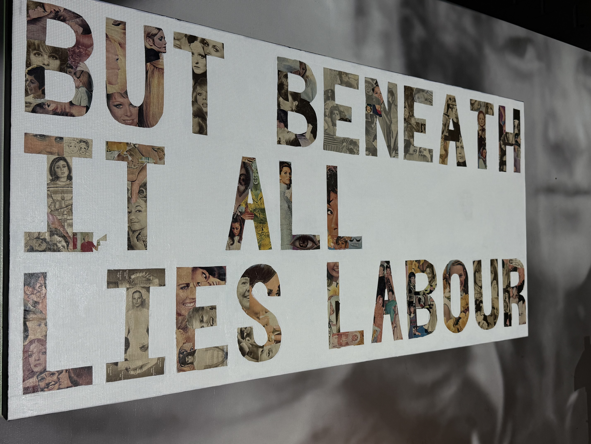
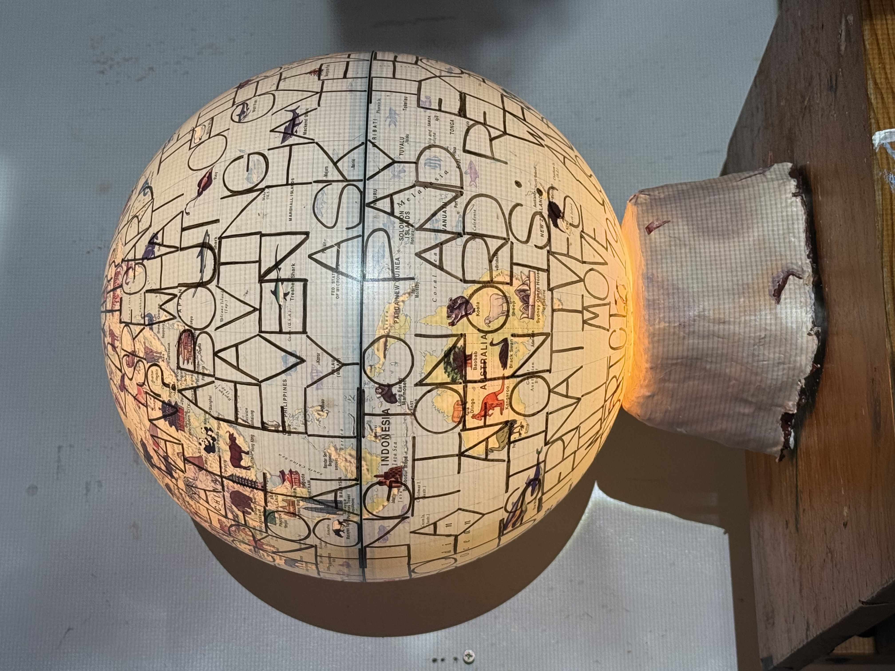

Materials Projector, projector mapping software, video montage, clay, impasto, acrylic paint, stretched canvas, 1970s Women's Weekly newspaper, lightbulb, globe, wiring, plinth, space for projecting, milk carton.
Dimensions Canvas: 64 × 150 × 5 cm. Sculpture: 50 × 30 × 30 cm. Entire installation: variable, dependent on installation space.


Artist Statement
My installation, $166.3 Billion: But Beneath It All Lies Labour, operates as a feminist protest against the historical and contemporary devaluation of women's unpaid domestic labour. It challenges the capitalist distinction between productive, remunerated work and the invisible labour of care, while questioning how economies are sustained by contributions that remain largely unrecognised.
Throughout my cross-disciplinary practice, I combine photographic collage, drawing, sculpture, readymade objects and archival video projection to construct an immersive visual argument. The imagery I use, appropriated from 1970s Australian Women's Weekly magazines, exposes the idealisation of domestic femininity and the cultural expectations imposed upon women. A protest-like canvas confronts viewers with these representations, while a historical timeline traces developments in women's rights, revealing both progress and persistent inequalities. A globe inscribed with the words of feminist political theorist Silvia Federici, supported by a ceramic structure, extends this critique beyond the Australian domestic sphere.
My practice draws upon Hannah Höch's politically charged photomontage, Barbara Kruger's confrontational relationship between text and image, and the Guerrilla Girls' use of statistics and visual provocation to expose systemic inequality. These artists inform my appropriation of mass-media imagery and the transformation of information into protest.
Throughout this foundational course, I have developed my video-making, collage and conceptual skills through a variety of classes and through studying artists and influences that formed the spine of this installation.
By combining historical documentation, domestic materials and contemporary feminist critique, I seek to make invisible labour materially and politically visible. The installation invites audiences to reconsider whose work sustains society, whose contributions are economically valued, and how deeply gendered expectations continue to shape everyday life.